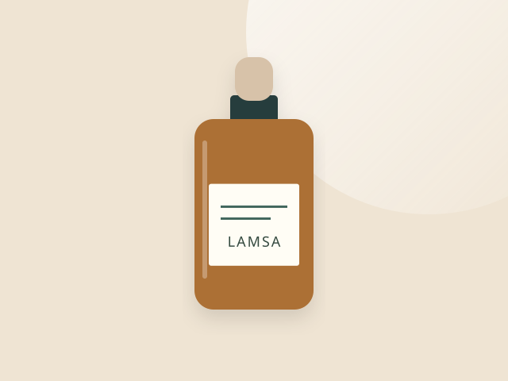
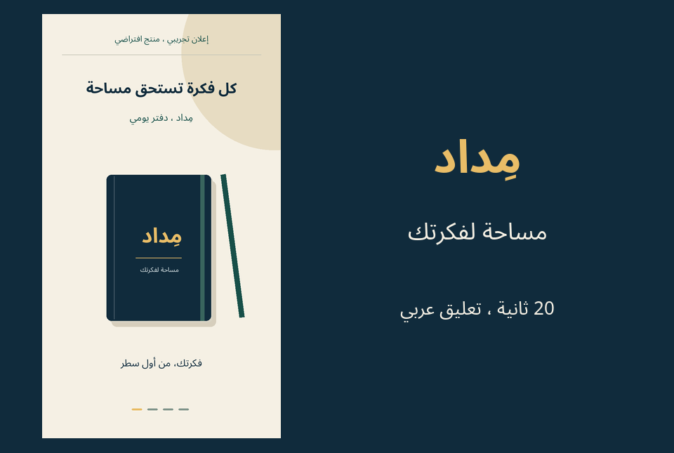
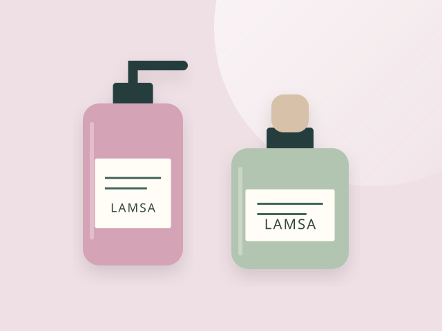
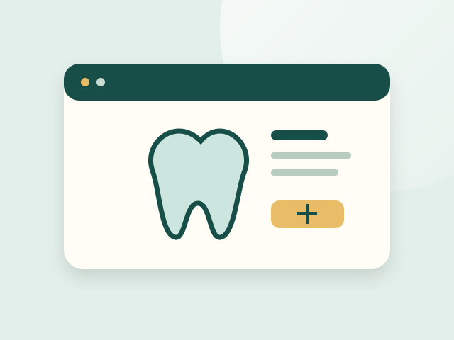

تصميم صفحات الهبوط
صفحة عربية تقدّم منتجك أو خدمتك في تسلسل واضح، وتوجّه الزائر إلى الخطوة المناسبة.
- تنظيم الفكرة والمزايا والأسئلة الشائعة
- عرض متجاوب للهاتف والحاسوب
- عناوين وروابط واضحة للتنقل
معرض أعمال هايس محمد عقيل العنزي
أنا هايس العنزي، معلم ومستخدم يومي لقارئ الشاشة. أعرض هنا مهاراتي في بناء صفحات عربية وتنظيم محتواها، وأقدّم دورتين مستقلتين لتعلّم VoiceOver على الآيفون.
الدورات متاحة للشراء الآن. خدمات التصميم والكتابة والفيديو قيد التجهيز؛ النماذج للاستكشاف والبريد للاستفسارات.
دورات VoiceOver متاحة للشراء الآن. خدمات التنفيذ التالية قيد التجهيز وغير متاحة للطلب حاليًا.
صفحة عربية تقدّم منتجك أو خدمتك في تسلسل واضح، وتوجّه الزائر إلى الخطوة المناسبة.
نص تسويقي يساعد الزائر على فهم المنتج، من فائدته الأساسية إلى مواصفاته وطريقة استخدامه.
عرض بصري موجز لفكرة المنتج في 15 إلى 30 ثانية، بنص عربي وتسلسل يناسب المشاهدة على الجوال.
هذه نماذج تجريبية لعرض المهارات. خدمات التصميم والكتابة والفيديو غير متاحة للطلب حاليًا؛ البريد للاستفسارات عن المعرض والدورات.
أعمال افتراضية تجريبية لعرض المهارات، وليست مشروعات منفّذة لعملاء. الأسماء والأسعار داخل النماذج تخيلية. صفحة الدورة تعرض معلومات دورتَي VoiceOver الفعليتين وروابط شرائهما المستقلة.

01 / كتابة تسويقية · نموذج تجريبي
نموذج وصف لدفتر يومي، من عنوان الفائدة إلى المواصفات وطريقة الاستخدام، مع مثال قبل التحرير وبعده.
دوري: كتابة الوصف وربط المواصفات بالفوائد
اقرأ نموذج وصف المنتج
02 / صفحات منتجات · نموذج تجريبي
تسلسل من الفكرة إلى المزايا وطريقة الاستخدام والأسئلة الشائعة، دون آراء عملاء أو نتائج مختلقة.
دوري: تصميم صفحة المنتج وتنظيم تسلسل المحتوى
افتح نموذج صفحة صفاء
03 / فيديو إعلاني · نموذج تجريبي
إعلان رأسي أصلي مدته 20 ثانية، برسوم متحركة ونص عربي، مع نص وصفي كامل. تتوفر نسخة بتعليق صوتي عربي وأخرى صامتة.
دوري: الفكرة والسيناريو والإنتاج البصري
شاهد الإعلان التجريبي
04 / واجهات متاجر · نموذج تجريبي
رسوم منتجات أصلية وتصفية حسب الفئة وسلة بكميات وحذف وإجمالي، مع تحديثات يعلنها قارئ الشاشة.
دوري: تصميم الواجهة والتصفية والسلة
افتح نموذج متجر لمسة
05 / مواقع خدمات · نموذج تجريبي
رحلة من التعرف على الخدمات إلى اختيار اليوم والفترة، مع تحقق محلي ورسائل أخطاء واضحة.
دوري: تصميم رحلة الموعد والتحقق من الحقول
افتح نموذج العيادة
06 / قوائم رقمية · نموذج تجريبي
أوصاف أطباق ورسوم أصلية وأسعار نصية، ضمن أقسام تدعم اللمس وأسهم لوحة المفاتيح.
دوري: تصميم القائمة وكتابة أوصاف الأطباق
افتح نموذج قائمة المطعم
07 / صفحات هبوط · نموذج تجريبي
مقارنة بين الدورتين الفعليتين: الصيغة والمحتوى وثمانية دروس لكل دورة، مع روابط المنهج والمعاينات والشراء.
دوري: تنظيم معلومات الدورتين وتجربة المقارنة
افتح نموذج صفحة الدورةالمعرض نفسه مشروع منشور أعمل على تطويره. هذه قصة قراراته، وليست تجربة لعميل أو نتيجة مبيعات.
عرض مهارات متعددة بجانب دورتين فعليتين، مع حاجة الزائر إلى التمييز سريعًا بين ما يمكن شراؤه وما يمكن تجربته فقط.
تنظيم المحتوى وبناء الواجهات بـHTML وCSS وJavaScript بمساعدة أدوات الذكاء الاصطناعي، ومراجعة النصوص والروابط والتفاعلات.
خبرتي اليومية مع VoiceOver وجّهت الاهتمام إلى ترتيب القراءة، وأسماء الأزرار، ورسائل الأخطاء، وبدائل الفيديو النصية.
| قبل التطوير | القرار | النتيجة |
|---|---|---|
| توضيح المتاح موزّع على الأقسام | إظهار حالة الخدمات والدورات في الواجهة | اختيار أوضح بين استكشاف المهارات وشراء دورة |
| سلة لمسة تختفي عند تحديث الصفحة | حفظها في المتصفح وإضافة البحث والفرز | تجربة العثور على منتج والعودة إلى السلة |
| فترات الموعد لا تطابق الجدول كاملًا | ربط الفترات باليوم المختار وساعات العمل | تجربة خيارات الموعد المتاحة |
شملت مراجعة النسخة المنشورة في 8 نوفمبر 2026 الصفحات الثماني؛ واستجابت 61 صفحة وموردًا ورابطًا داخليًا بنجاح. اختُبرت السلة ونموذج الموعد والتبويبات وتشغيل الفيديو والترجمة. هذا فحص وظيفي وتقني، ولا يمثل اختبار VoiceOver على آيفون فعلي أو اعتمادًا شاملًا لإمكانية الوصول.
لا تتوفر بيانات زيارات أو مبيعات لقياس أثر هذه التعديلات على التحويل. أعرض ما يمكن التحقق منه، وأواصل التحسين بناءً على التجربة والملاحظات.
أنا هايس محمد عقيل العنزي، معلم سعودي للطلاب ذوي الإعاقة البصرية منذ عام 2012. أستخدم قارئ الشاشة VoiceOver يوميًا وأجيد برايل؛ لذلك أهتم بوضوح المحتوى وترتيب القراءة وسهولة التنقل.
أبني نماذج صفحات عربية باستخدام HTML وCSS وJavaScript، وأعرض هنا تجاربي في تصميم صفحات الهبوط وكتابة المحتوى الرقمي.
I am Hayis Mohammed Aqeel Alanazi, a Saudi teacher of students with visual impairments since 2012 and a daily VoiceOver user. This portfolio presents seven demonstration projects. Content services are being prepared; my audio and video VoiceOver courses are available separately on Gumroad and Udemy.
دورتان مستقلتان لتعلّم قارئ الشاشة على الآيفون. تفاصيل المحتوى والسعر وشروط الشراء في منصة كل دورة.
متاحة الآن · Gumroad
8 دروس MP3 ونحو 45 دقيقة، مع النص الكامل في ملف Word. تتوفر تفاصيل التحميل والشراء على Gumroad.
اشترِ الدورة الصوتية على Gumroadمتاحة الآن · Udemy
8 دروس مصوّرة ونحو 45 دقيقة لتعلّم الأساسيات. المنهج والمعاينات والسعر الحالي على Udemy.
اشترِ الدورة المصوّرة على يوديميWeb Applications Development
يسعدني استقبال استفسارك عبر البريد. ولشراء الدورات، استخدم رابط المنصة المناسب أعلاه.
لا أستقبل طلبات تنفيذ حاليًا. خدمات صفحات الهبوط ووصف المنتجات والفيديو القصير قيد التجهيز.